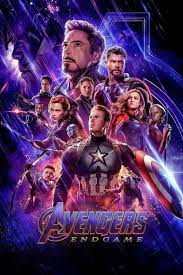

Vingadores: Ultimato

Data de lançamento: 25 de abril de 2019 No cinema
Diretor: Joe Russo, Anthony Russo
Roteiro: Christopher Markus, Stephen McFeely
Título original Avengers: Endgame
Sinopse: Em Vingadores: Ultimato, após Thanos eliminar metade das criaturas vivas em Vingadores: Guerra Infinita, os heróis precisam lidar com a dor da perda de amigos e seus entes queridos. Com Tony Stark (Robert Downey Jr.) vagando perdido no espaço sem água nem comida, o Capitão América/Steve Rogers (Chris Evans) e a Viúva Negra/Natasha Romanov (Scarlett Johansson precisam liderar a resistência contra o titã louco
Link do Disney+ para assistir ao filme aqui
Conheça o Elenco dos Vingadores: Ultimato
Voltar ao início